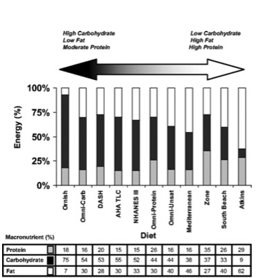

Macronutrients
Almost all diet plans are based on distribution of macronutrients in required ratios, as shown in data table below the attached image.
Water Tracking
Water intake has a measured positive effect on mineral uptake as part of calorie consumption. Unfortunately, the body's natural process of reporting thirst is delayed past the most effective time window for nutrient uptake. In order to compensate for this deficit, intake must be "ahead" of the body's natural thirst response. Therefore, intaking fluid in a steady stream during waking hours helps maximize the potential nutrient uptake.
So why does our water tracker stop at 128oz?
Balance is important. The suggested intake for a highly active adult is 121.2 ounces a day. A full gallon is 128oz, so for ease of remembering your goal, we "rounded" up to 128 ounces.
Information
Where can I find the macro content of the food I consume?
Finding the nutrionial value and content of your food is as simple as turning over your food item and checking out the Nutritional Facts label. Please do not forget to take into account serving size and multiply stated values by total intake.